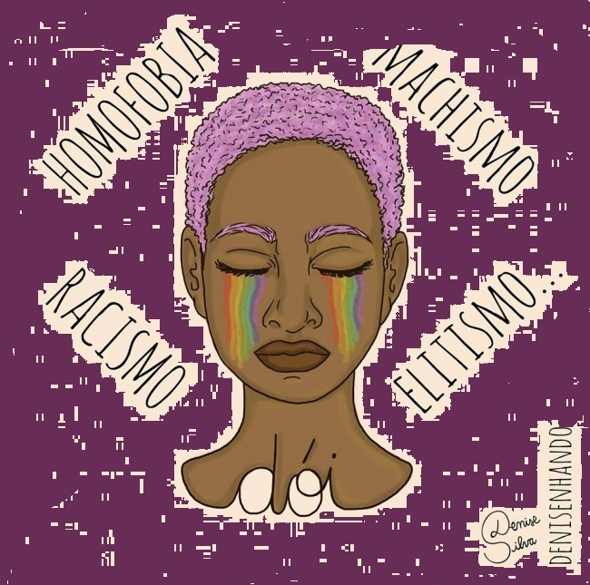

8 DE MARÇO - DIA DA MULHER
|  |
| UM MUNDO MAIS SEGURO, POR FAVOR!!! |
|
Ela desceu do busão Encontrou com o namorado Numa noite sem verão E no seu coração Paixão desenfreada Desceu a rua só Dez da noite Na quebrada De repente medo vem Por alguém foi abordada Um cano na cintura Ela ficou paralisada Assustada Achou que era um assalto Maldade de boné E oitão no asfalto Magro, alto No rosto uma cicatriz Mais um verme vai fazer Outra família infeliz Ela fez o que ele quis Deu bolsa e o celular Finge que namoramos Se gritar vou atirar Não teve como escapar Sozinha, arrastada Pro matagal escuro Sua roupa foi rasgada Cadê suas amigas? Onde que estão seus manos? Outra mulher estuprada Com vinte e poucos anos Interromperam seus planos Uma vida despedaçada Eterno é o trauma Na alma violentada Ela beirou a morte E a beira do abismo Conheceu o ódio Assassino com machismo Jack - Nocivo |